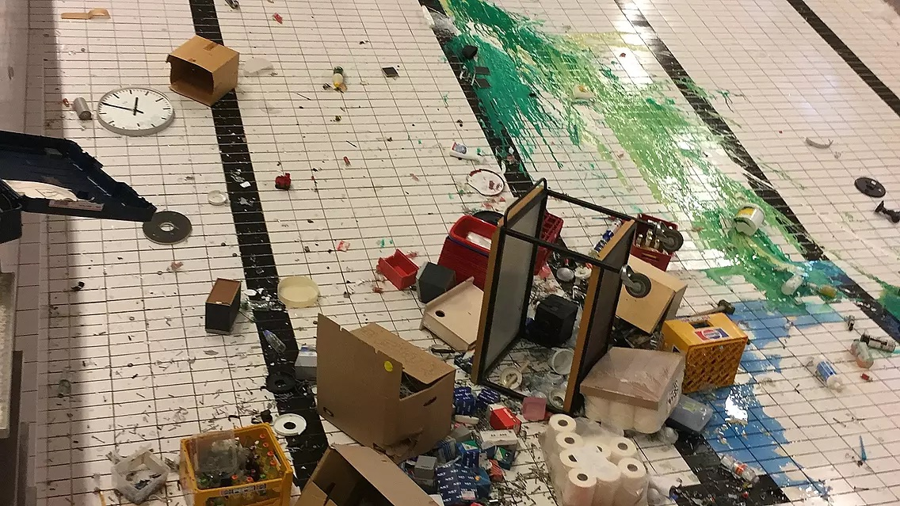
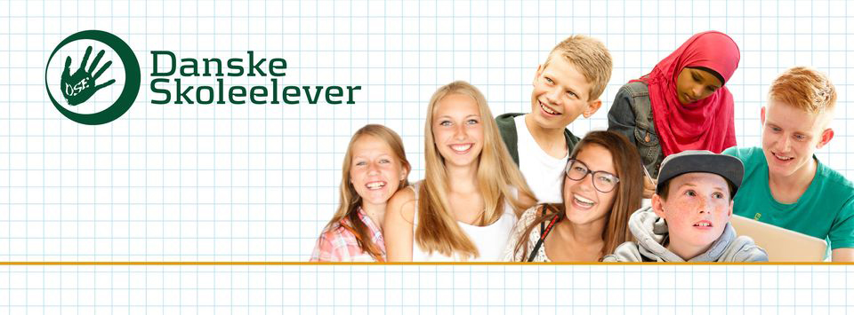
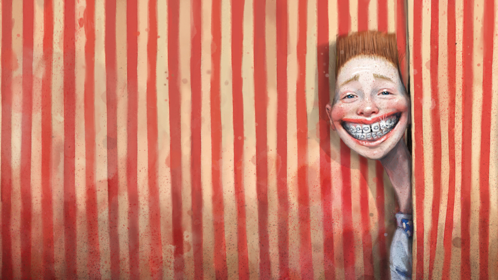
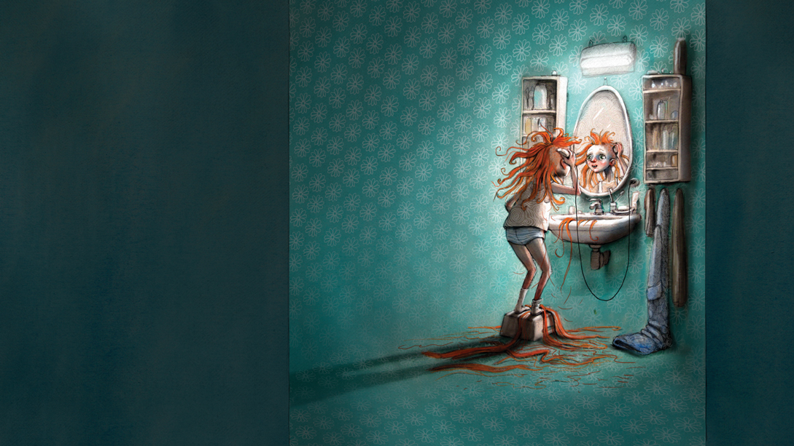

- Hærværk
- Skolen til debat
- Fodbold, fællesskab og fankultur
- Dit liv, mit liv, teenageliv
Kl. 9.00-12.30
Før du skriver
Til eleven
Til denne prøve i skriftlig fremstilling har du adgang til internettet.
Du må ikke kommunikere eller dele dine dokumenter med andre under prøven.
Hvis du i din tekst anvender informationer, citater, billeder, ressourcer fra internettet eller fra andre steder, skal du angive kilderne sidst i besvarelsen. Hvis du anvender kilder fra prøveoplægget, behøver du ikke at angive dem i din tekst.
Din tekst vurderes på, hvor godt du udfolder de tre vurderingsdimensioner funktion, indhold og form på en sammenhængende og meningsfuld måde i din tekst.
Se vurderingskriterierne nedenfor.
God arbejdslyst!
Vurderingskriterier til eleven
Der gives én karakter baseret på en helhedsvurdering af tre dimensioner: funktion, indhold og form.
|
Vurderings- dimension |
Vurderings- område |
Vurderingsspørgsmål |
| Funktion | Skrivesituation | I hvilken grad fungerer din tekst i den skrivesituation, som opgaven beskriver? |
| Opgavens krav | I hvilken grad opfylder du opgavens krav til afsender, modtager og fremstillingsformer? | |
| Indhold | Mening | I hvilken grad udtrykker din tekst et meningsfuldt indhold? |
| Ressourcer | I hvilken grad bruger du opgaveforlægget, din egen faglige viden og internettet i din tekst? | |
| Form |
Tekstsammen- hæng |
I hvilken grad hænger din tekst sammen sprogligt, og er der velvalgte afsnit og modaliteter? |
| Skrift og andre modaliteter | I hvilken grad bruger du tegnsætning, tekstbehandlingsprogrammets funktioner og ord, så det understøtter den situation, teksten skal bruges i? |
1. Hærværk

Foto: Tonny Birkekjær, tvmidtvest.dk
På Nordbyskolen har de haft store problemer med hærværk. Som inspiration til din opgave skal du læse om det her:
Kilde: folketidende.dk
Forestil dig, at hærværk også er et problem på din skole. Skoleledelsen vil gerne inddrage eleverne i at finde gode løsninger, der modvirker hærværk. De vil gerne have elevernes bidrag til en kampagne, der kan motivere eleverne til at passe godt på skolen.
Du er udvalgt fra din årgang til at skrive et forslag til en kampagnetekst.
Skriv teksten til kampagnen. I din tekst skal du:
|
2. Skolen til debat

Kilde: Danske Skoleelever/facebook.com
Danske Skoleelever vil invitere til diskussion om fremtidens skole og opfordrer unge til at deltage i debatten på deres hjemmeside.
Du vælger at bidrage med et debatindlæg, hvor du argumenterer for din holdning til en god skole.
Skriv dit debatindlæg til Danske Skoleelever. I din tekst skal du:
Debatindlægget skal udgives på danskeskoleelever.dk. |
3. Fodbold, fællesskab og fankultur
Din klasse har en venskabsklasse i Norden. I skal skrive til klassen om forskellige emner, der giver indblik i det at være ung i Danmark. Du har fået til opgave at skrive om fodbold og fankultur. Det kan være lokalt eller nationalt.
Se videoen på DBU’s hjemmeside, som viser stemningen til en fodboldkamp:
Kilde: dbutv.dk
|
Skriv et brev til jeres venskabsklasse. Som forberedelse skal du se videoen fra en fodboldkamp og søge viden om fodbold, fællesskab og fankultur og inddrage det i din tekst. I din tekst skal du:
Brevet skal sendes som mail til jeres venskabsklasse. |
4. Dit liv, mit liv, teenageliv
Et forlag vil udgive en antologi med titlen Dit liv, mit liv, teenageliv, der i ord og billeder skaber et portræt af teenagetiden til læsere i alle aldre. Forlaget ønsker unges fortællinger til seks billeder af Lisa Aisato.
Du vælger at bidrage med en fortælling.
Se billederne her:
|  |  |
 |
|
Billedtekster:
Øverst til venstre: ... prøvede konfirmationstøj og begyndte at bruge deo.
Øverst til højre: Vi forandrede os.
Midt til venstre: Nogle dage gjorde vi oprør.
Midt til højre: Somme tider var verden overvældende,
Nederst til venstre: andre gange lå den for dine fødder.
Nederst til højre: Jeg håber, vingerne bærer.
Kilde: Uddrag fra "Livet illustreret" af Lisa Aisato, forlag: Straarup & Co.
Fortæl med udgangspunkt i et eller flere af billederne om tanker og oplevelser som teenager.
Fortællingen kan være opdigtet, noget, du selv har oplevet, eller en blanding af begge dele.
|
Du skal skrive to tekster: en fortælling om teenagelivet til antologien og et kort følgebrev til forlaget. Fortællingen skal tage udgangspunkt i et eller flere af billederne og have:
I dit følgebrev skal du:
|
Det følgende er ikke en del af prøven:
Dette prøvesæt er omfattet af ophavsretten, jf. ophavsretslovens § 1.
Prøvesættet må alene anvendes til den på prøvesættet anførte prøve.
Al anden anvendelse af prøvesættet, herunder visning eller deling f.eks. via internettet, sociale medier, portaler og bøger, udgør en krænkelse af Børne- og Undervisningsministeriets og evt. tredjemands ophavsret og er ikke tilladt.
Overtrædelse af ophavsretten kan være erstatningspådragende og/eller strafbart.
Prøvesættet kan dog, efter at prøven er afsluttet, anvendes til undervisningsbrug på uddannelser m.v. omfattet af den lovgivning, som Styrelsen for Undervisning og Kvalitet administrerer.